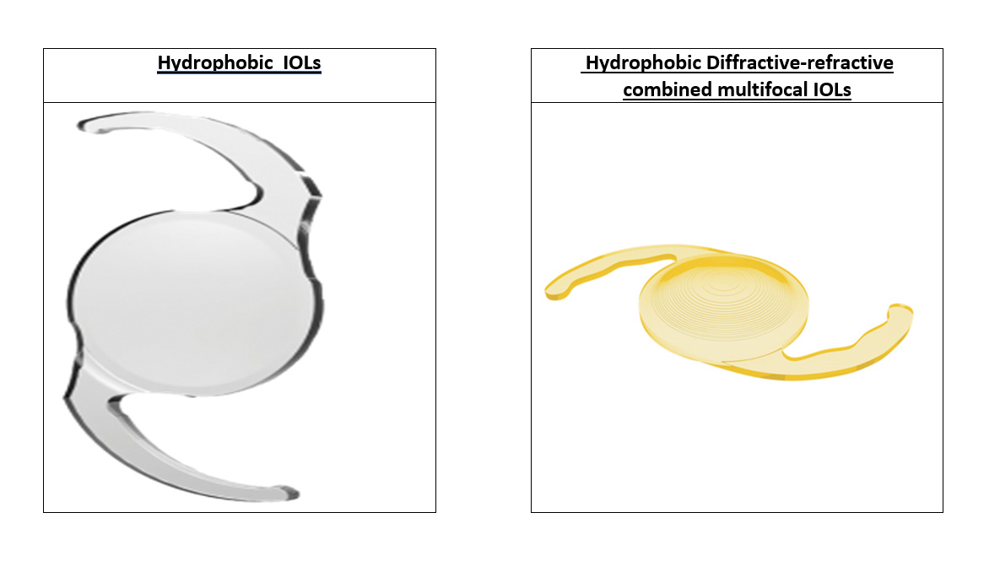

INTRAOCULAR LENSES

HYDROPHOBIC IOLs
Made up of biocompatible hydrophobic acrylic material with UV absorption and also has Biconvex surfaces which minimize effects of tilt, decentration and aberration and with a 360 degree square-edge profile for reduced PCO rates. The combination of the best material and the choice of design makes the Hydrophilic single piece a complete range of product. The advantage of a foldable lens is clearly that the size of the incision can be made very much smaller.
| UV | Chamber | Optic Style | Optic Size | Diametral | Angulation |
|---|---|---|---|---|---|
| 601 UV | Anterior | Plano-convex | 6.15mm | 12.5mm | 0.5mm vault depth |
| 602 UV | Anterior | Plano-convex | 6.0mm | 12mm | 0.55mm vault depth |
| 603 UV | Anterior | Plano-convex | 6.5mm | 12.75mm | 0.25mm vault depth |
| 604 UV | Anterior | Plano-convex | 6.25mm | 12mm | 0.5mm vault depth |